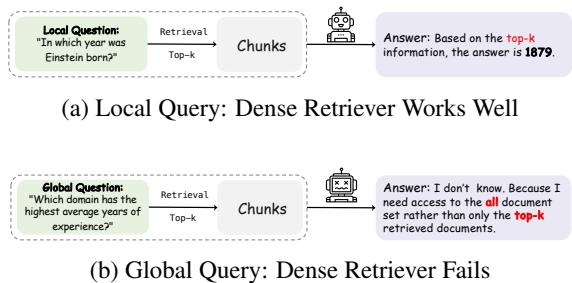

本文提出了GlobalQA基准和Global-RAG框架，解决了现有检索增强生成（RAG）方法在全局任务中的不足。GlobalQA专注于评估语料库级信息聚合能力，而Global-RAG通过文档级检索、智能过滤和聚合模块，显著提升了全局任务的性能，F1分数从1.51提升至6.63，树立了新的性能标杆。
Towards Global Retrieval Augmented Generation: A Benchmark for Corpus-Level Reasoning

图 1：论文核心方法/架构示意图
快速简介
深度解读
现有问题
本文旨在解决当前检索增强生成（RAG）方法在处理全局任务时的根本性不足。现有RAG系统及评估基准（如HotpotQA, NQ）主要集中于局部RAG，即从少量文档中检索特定信息来回答简单问题。然而，实际应用需要全局RAG能力，即跨整个文档语料库进行信息聚合、汇总和复杂推理。
这个问题很重要，因为现有方法在全局任务上表现极差，面临三大核心挑战： 1. 结构破坏：传统的文档块化（chunking）会破坏文档的结构完整性，丢失关键元数据。 2. 检索噪声：在大型语料库中检索时，大量不相关的“噪声”文档会占据宝贵的上下文窗口，干扰LLM的推理。 3. 计算限制：大语言模型（LLMs）本身在精确的数值计算和符号推理（如计数、排序、求极值）方面能力有限，容易出错。
Hypothesis
本文的核心假设是，一个集成了神经检索与程序执行的多范式框架能够有效解决全局RAG任务的挑战。具体假设如下： - 评估：需要一个专门的基准（GlobalQA）来系统性地暴露和评估现有RAG方法在全局任务上的缺陷。 - 架构：一个由检索、过滤、聚合构成的三阶段管道（Global-RAG）可以显著提升性能。 - 关键技术：通过文档级检索保持结构完整性，利用LLM驱动的智能过滤器消除噪声，并集成外部计算工具（通过工具调用）进行精确的符号计算，是成功执行全局RAG任务的关键。
相关研究
本文的研究建立在并超越了以下相关工作： - 标准RAG方法：如Lewis et al. (2021)的研究和基于DPR、Contriever的检索器。 - 高级RAG技术：包括迭代检索方法（如FLARE, IRCoT）和图结构化方法（如GraphRAG, HyperGraphRAG）。 - 现有问答数据集：与主要测试局部检索的单跳（NQ, MS MARCO）和多跳（HotpotQA, MuSiQue）数据集形成对比，凸显了它们在评估全局能力方面的不足。
面向全局信息聚合的完整解决方案：GlobalRAG框架与GlobalQA基准
本文旨在解决当前检索增强生成（RAG）方法在处理需要跨越大量文档进行信息聚合与分析的“全局任务”时所面临的根本性挑战。为此，研究者们提出了一个双重解决方案：首先，构建了一个全新的评估基准GlobalQA来系统性地衡量全局RAG能力；其次，设计了一个名为GlobalRAG的多工具协作框架，以有效应对这些挑战。
1. 背景：现有RAG方法的局限性与GlobalQA基准的提出
现有的RAG系统在处理全局查询时存在三大核心局限性： 1. 信息碎片化（Information Fragmentation）：传统的RAG方法将文档分割成固定长度的文本块进行检索，这种方式破坏了文档的结构完整性，导致元数据与内容分离，难以进行准确的信息聚合。 2. 检索噪声放大（Retrieval Noise Amplification）：在对大规模文档集进行检索时，密集检索器会返回大量语义相关但对回答问题无用的噪声文档，这些文档占用了宝贵的上下文窗口，干扰了模型的推理过程。 3. 计算瓶颈与推理缺陷（Computational Bottlenecks & Reasoning Deficiencies）：大型语言模型（LLM）本身在精确的数值计算、统计和排序等符号推理任务上存在固有的局限性，难以胜任复杂的全局分析。
为了系统性地评估并解决这些问题，研究者们首先构建了GlobalQA基准。该基准基于2,000多份真实简历创建，包含超过13,000个问答对，其核心特点是： - 任务多样性：涵盖计数、极值查询、排序和Top-k提取四种核心任务，全面评估模型的全局推理能力。 - 全局性要求：大部分查询需要遍历并整合超过20份文档的信息，迫使模型发展真正的全局分析策略，而非依赖小范围检索的技巧。 - 构建严谨：采用反向构建策略，从数据生成和执行轨迹出发，确保问题、答案和推理路径的一致性与可靠性。
2. 核心解决方案：GlobalRAG框架
针对上述挑战，本文提出了GlobalRAG，这是一个无需额外训练的、多工具协作的框架。它通过一个清晰的三阶段管道（检索 → 过滤 → 聚合）来系统性地解决全局RAG任务。
3. GlobalRAG的关键组件与技术创新
阶段一：文档级检索（Document-level Retrieval）
为解决信息碎片化问题，GlobalRAG采取了以下策略： - 保持结构完整性：将完整的文档视为原子检索单元，而非任意分割的文本块。这确保了文档的元数据（如年份、作者）和正文内容在检索时保持一致，为后续的准确聚合奠定了基础。 - 多步迭代检索：框架支持多步检索机制，允许模型进行迭代式的信息收集和整合，逐步构建更全面的全局知识图谱，以应对复杂查询。
阶段二：LLM驱动的智能过滤器（LLM-Powered Intelligent Filter）
为了应对检索噪声放大的问题，GlobalRAG设计了一个高效的过滤机制：
- 检索-阅读-过滤管道：在初步检索后，系统利用一个轻量级的大型语言模型（LLM）作为智能过滤器。
- 精确去噪：该过滤器会逐一判断每个检索到的文档是否包含回答查询所需的信息（例如，通过提问 “Does document D_i contain information to answer query q?”）。只有通过验证的高质量文档才会被传递到下一阶段，从而极大地减少了噪声干扰，确保推理基于高相关性的信息进行。实验证明，使用更大规模的LLM作为过滤器能进一步提升性能的稳定性和准确性。
阶段三：任务级聚合与符号计算工具（Task-Level Aggregation & Symbolic Computation Tools）
为了弥补LLM在数值和符号计算上的短板，GlobalRAG引入了一套专门的聚合工具： - 混合推理模式：将LLM的语言理解能力与精确的符号计算相结合。 - 模块化工具集：针对不同的全局任务类型，设计了专门的计算模块，包括： - 计数工具（Counting Tool）：准确地枚举和去重实体，用于语料库级别的计数任务。 - 极值工具（Extremum Tool）：精确提取和比较数值或序数属性，以解决全局最大/最小值查询。 - 排序工具（Sorting Tool）：从不同格式的文档中提取可比较的指标，并使用确定性算法进行一致性排序。 - Top-k提取工具（Top-k Extraction Tool）：利用高效算法（如堆算法）来识别前k个实体，平衡全局分析与选择性输出。
这些工具的引入，为全局RAG提供了可靠的数值推理基础，确保了结果的准确性和一致性。
4. 效果验证与性能
研究者们在自建的GlobalQA基准上对GlobalRAG进行了全面评估。 - 评估指标：使用F1分数衡量最终答案的质量，并使用Document F1@k (D-F1@k)评估检索文档的覆盖率。 - 显著性能提升：在Qwen2.5-14B模型上，GlobalRAG的表现达到了6.63的F1分数，而现有最强的基线方法仅为1.51 F1。这一超过5个点的显著提升，充分验证了GlobalRAG框架的有效性。 - 鲁棒性：实验还表明，随着检索文档数量的增加，GlobalRAG的性能稳步提升，显示出其强大的噪声处理和相关信息筛选能力。
5. 总结
本文通过提出GlobalQA基准和GlobalRAG框架，为全局信息检索与分析领域做出了重要贡献。GlobalRAG以其创新的三阶段管道设计——文档级检索、智能过滤和符号聚合工具——系统性地解决了现有RAG方法在处理全局任务时面临的信息碎片化、噪声干扰和数值计算能力不足的核心问题。其卓越的性能表现不仅为复杂的知识密集型应用提供了强大的解决方案，也为未来RAG架构的研究指明了新的方向。
实验设计
- 基准评估：在提出的GlobalQA基准上，系统性地评估了多种现有RAG方法（包括标准RAG、迭代检索、图方法）的性能，以量化它们的局限性。
- 对比实验：将Global-RAG框架与上述基准方法进行全面比较，实验基于不同规模的Qwen2.5模型（3B, 7B, 14B）。
- 消融研究：通过消融实验分析Global-RAG框架中各个组件（如检索粒度、过滤模块、聚合工具）对整体性能的贡献。
数据集和代码
- 数据集：引入了GlobalQA基准，该数据集包含超过13,000个问答对，构建于2,000多份真实世界的简历之上。数据集已公开： https://huggingface.co/datasets/QiiLuoo/GlobalQA
- 代码：论文片段中未提供代码库的链接。
实验结果
实验结果有力地验证了本文的假设： - 现有方法表现不佳：在GlobalQA基准上，最强的基线RAG方法F1分数仅为1.51，证实了它们在全局任务上的严重不足。 - Global-RAG性能卓越：Global-RAG框架取得了显著的性能提升，在使用Qwen2.5-14B模型时，F1分数达到了6.63，比最强基线高出超过5个点。 - 框架有效性：Global-RAG在各项指标（如F1和D-F1@20）上均优于所有基准方法，证明了其三阶段设计的有效性。
论文贡献
- 识别并量化了问题：首次系统性地识别并量化了当前RAG架构在处理全局聚合任务时面临的三大根本局限性。
- 提出了新的评估基准（GlobalQA）：创建并发布了GlobalQA，这是第一个专门用于评估RAG系统语料库级别聚合能力的基准，填补了评估领域的空白。
- 提出了新的解决方案（Global-RAG）：设计并验证了Global-RAG框架，该框架通过结合文档级检索、智能过滤和工具调用，为解决复杂的全局RAG任务提供了一个有效且强大的范式。
- 树立了新的性能标杆：实验证明Global-RAG在全局任务上远超现有方法，为该领域的研究设立了新的SOTA（State-of-the-Art）性能标准。